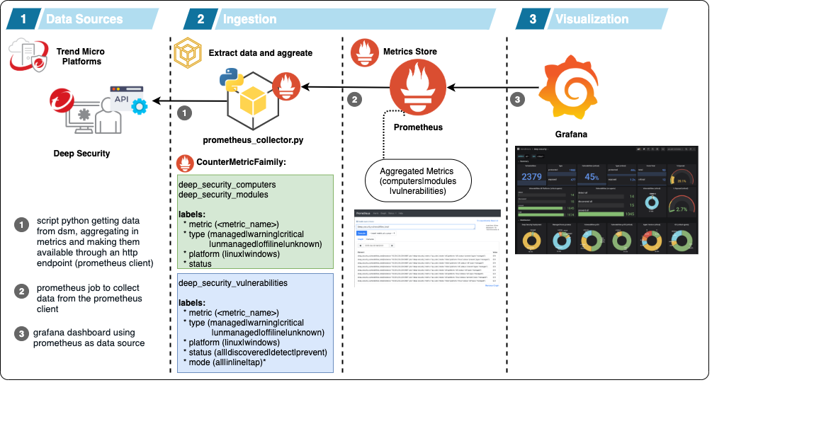
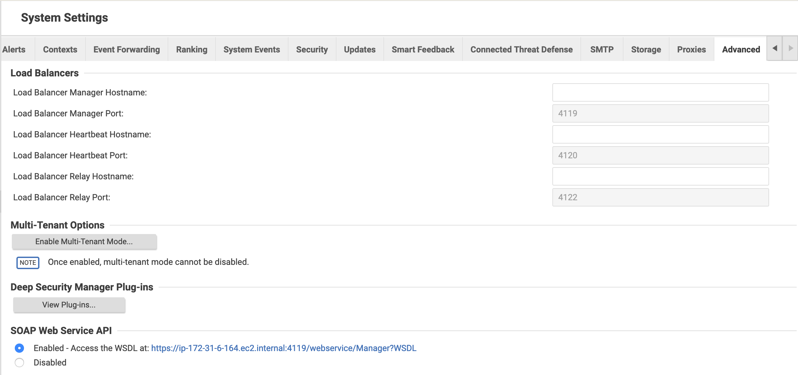
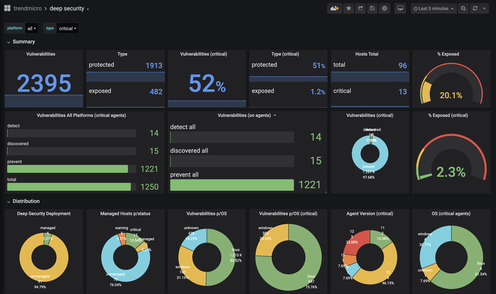
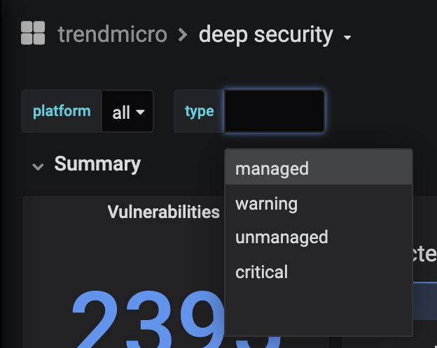

This project creates a prometheus collector getting metrics from Deep Security DSM 11.0.
The data is aggregated in count and segmented in 3 groups:

deep_security_computers
deep_security_modules
deep_security_vulnerabilities
About vulnerabilities status:
virtualenv venv
source venv/bin/activate
pip install -r requirements.txt
pipenv --two
pipenv shell
pip install -r requiriments.txt
You should configure a config.py (renaming config_sample.py to config.py with your configuration), or using environment variables, to configure:
| Variable | Description | Value | Value Type |
|---|---|---|---|
| DS_HOST | DSM Hostname | ip | fqdn |
| DS_PORT | DSM TCP Port | port Number | string |
| DS_USER | User Account (read only) | user_name - base64 encoded | string |
| DS_PASS | User Password | user_pass - base64 encoded | string |
| DS_VERIFY_SSL | SSL Verify | True | False |
| DS_API_CHECK | Cache API data | time in minutes | integer |
| SERVER_PORT | Prometheus Collector TCP Port | port number | integer |
| LOG_LEVEL | Log level | INFO | WARN |
To encode your credentials:
echo -ne '<ds_user>'|base64
echo -ne '<ds_pass>'|base64
We need to enable SOAP Web API on the DSM. To do it, you should to to:

Import the dashboard located on: grafana/dash.json


easy_install pip
pip install virtualenv
virtualenv venv
source venv/bin/activate
pip install -r requirements.txt
checking supervisord:
./venv/bin/supervisord -version
create tar file
tar -zcvf tmds11-exporter.tar.gz tmds11-exporter
scp tmds11-exporter.tar.gz <user_name>@<server_name>:/home/<user_name>
tar xzvf tmds11-exporter.tar.gz
sudo mv tmds11-exporter /opt/
checking if the supervisord version is 4.2.0:
/opt/tmds11-exporter/venv/bin/python2.7 /opt/tmds11-exporter/venv/bin/supervisord -version
checking with your collector config.py is configured:
cd /opt/tmds11-exporter/
/opt/tmds11-exporter/venv/bin/python2.7 src/collector.py
creating supervisor conf file:
sudo mkdir /etc/supervisor
sudo -s
/opt/tmds11-exporter/venv/bin/python2.7 /opt/tmds11-exporter/venv/bin/echo_supervisord_conf > /etc/supervisor/supervisord.conf
sudo cp supervisord.conf /etc/supervisor
creating the systemd daemon configuration:
sudo vi /usr/lib/systemd/system/supervisord.service
you will need to add this lines on that file:
[Unit]
Description=supervisord - Supervisor process control system for UNIX
Documentation=http://supervisord.org
After=network.target
[Service]
User=ec2-user
Type=forking
ExecStart=/opt/tmds11-exporter/venv/bin/python2.7 /opt/tmds11-exporter/venv/bin/supervisord -c /etc/supervisor/supervisord.conf
ExecReload=/opt/tmds11-exporter/venv/bin/python2.7 /opt/tmds11-exporter/venv/bin/supervisorctl reload
ExecStop=/opt/tmds11-exporter/venv/bin/python2.7 /opt/tmds11-exporter/venv/bin/supervisorctl shutdown
[Install]
WantedBy=multi-user.target
Obs: change the user (ec2-user) to the user that you defined to run the script
start daemon:
sudo systemctl start supervisord
sudo systemctl enable supervisord
sudo systemctl status supervisord
sudo vi /etc/supervisor/supervisord.conf
add this lines on /etc/supervisor/supervisord.conf:
[program:tmds11-exporter]
command=/opt/tmds11-exporter/venv/bin/python2.7 -u src/collector.py
user=ec2-user
autostart=true
autorestart=true
directory=/opt/tmds11-exporter
stdout_logfile=/opt/tmds11-exporter/tmds11-exporter_output.txt
stderr_logfile=/opt/tmds11-exporter/tmds11-exporter_output_err.txt
redirect_stderr=true
Obs: change the user (ec2-user) to the user that you defined to run the script
reload the configiration:
systemctl reload supervisord
check status:
/opt/tmds11-exporter/venv/bin/python2.7 /opt/tmds11-exporter/venv/bin/supervisorctl
the output should be something like that:
tmds11-exporter RUNNING pid 1770, uptime 0:00:39
test the collector:
curl localhost:9090
I've included inside this project the last version of the SDK for DS 9 to 11 versions. The code was developed by @marknca and is available here: https://github.com/deep-security/deep-security-py/.
I've based the collector structure on this example https://github.com/jakirpatel/prometheus-custom-collector/blob/master/code/collector.py developed by @jakirpatel.
I've based the collector structure on this examples:
This project is not part of any Trend Micro Deep Security project and it is not supported by Trend Micro.
Use and adapt to your needs and PRs are welcomed.